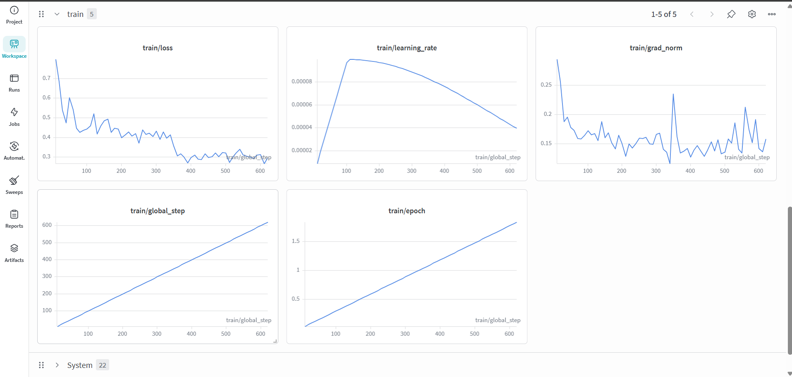
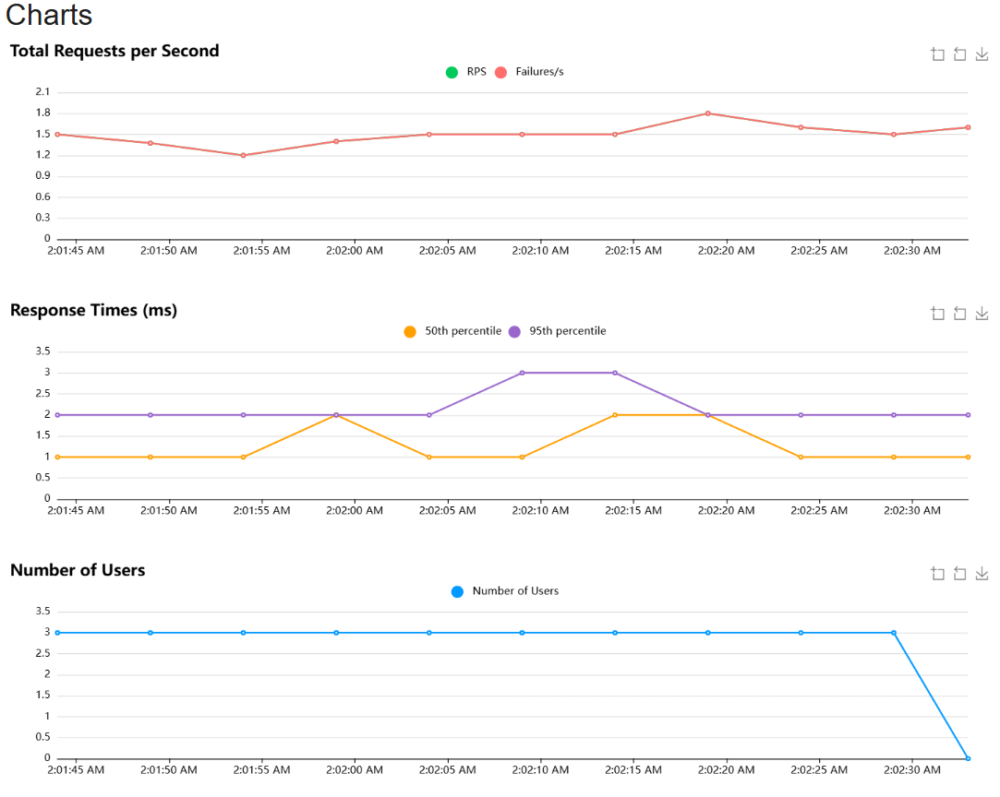

Technical Pipeline Highlights
▸
Parameter-Efficient Adaption: Configured LoRA matrices targeting specific linear attention projections (`q_proj`, `v_proj`) to cut down trainable weight configurations drastically while protecting baseline language alignment.
▸
4-Bit QLoRA Quantization: Integrated BitsAndBytes structures utilizing `NF4` data quantization alongside double-quantization steps to make modern LLM training highly feasible on standard commercial hardware.
▸
Weights & Biases Telemetry: Bound Hugging Face training callbacks directly to customized W&B spaces to cleanly observe validation loss shifts, learning rate curves, and system compute load maps.
▸
Gradient Management Profiles: Optimized execution loops through dynamic gradient accumulation steps and mixed-precision modes (`fp16`/`bf16`) to maximize memory utilization efficiency.
Weights & Biases Run Tracking

Figure 1: W&B Training Run Diagnostics. Displays real-time training telemetry tracking stable loss convergence down to ~0.3, a managed learning rate scheduler curve with proper warmup, and controlled gradient norms over 600 global training steps.
Model Serving Load Tests

Figure 2: Serving Endpoint Stress Testing. Profiles the fine-tuned model container under concurrent user loads via automated request generation, mapping structural response latencies (50th and 95th percentiles) alongside request-per-second performance.